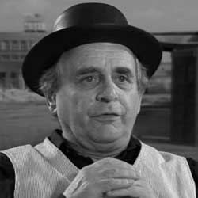

| |
| Home The Doctors The Companions The Villains Show History |
Sylvester McCoySylvester McCoy (born Percy James Patrick Kent-Smith: 20 August 1943) is a Scottish actor. As a comic act and busker he appeared regularly on stage and on BBC Children's television in the 1970s and 80s, before going on to play the seventh incarnation of the Doctor in the long-running science fiction television series Doctor Who from 1987 to 1989 – the final Doctor of the original run – and a brief return in a television film in 1996. More recently, he played the wizard Radagast the Brown in Peter Jackson's film adaptations of The Hobbit. |
|
Kayleen Garcia |
Ann Marie Skjold |
Content derived from the Doctor Who Wikipedia. |